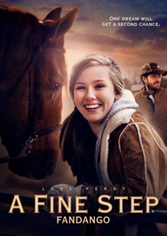

#8049 Fandango - Ein Freund fürs Leben
Alternativ: A Fine Step
 
 IMDB-Wertung: 5.2 / 10
IMDB-Wertung: 5.2 / 10  Metascore: 0
Metascore: 0 
When an expert horseman (Luke Perry) suffers a traumatic accident with his top horse, he overcomes his injury with the help of a young girl who helps rehabilitate him and the horse
Jahr: 2014
Dauer: 111 Minuten
FSK: 0
Land: USA Studio: Vertical EntertainmentTonspuren: DTS - ,
Untertitel: Deutsch,
Auflösung: 1080p (1920x816) Größe: 5672 MB
Genre: Drama
Regisseur: Jonathan Meyers
Drehbuch: Keith Suggs
Soundtrack: Krista Wroten Combest
Darsteller:
 Luke Perry als Cal Masterson
Luke Perry als Cal Masterson Armand Assante als Alejandro Bolivar
Armand Assante als Alejandro Bolivar- Cameron Daddo als Mason Scott
- Anna Claire Sneed als Claire Scott
 Leonor Varela als Liliana Bolívar
Leonor Varela als Liliana Bolívar- Justin Baldoni als Marzo Bolivar
- Ashley Ann Vickers als Sierra
- Allen O. Battle III als Marzo's Driver (uncredited)
- Mannie De Castro als Millio (uncredited)
- Amy Lavere als Maggie Masterson
- Oliver Macready als Tucker
- Lindsey Belz als Young Liliana
- Wesley Okerson als Doctor Wesley
- Roy Cash als Clay
- Cylk Cozart als Veterinarian
- Billie Worley als Announcer
- Jack Parnell als Announcer
- Jamie Gascon als Ring Master
- Dennis Sonnenschein als Judge
- Lauren Conde als Judge
- Rufino Figueroa als Judge
- Blair Riley als Judge
- Juan Pablo Gomez als Judge
- Donald Meyers als Extra
- Katie Sneed als Extra
- Virginia Kay als Extra
- Charlotte Nichols als Extra
- Virginia Hayes als Extra
- Bailey Phillips als Extra
- Lisa Thompson als Extra
- Mary Elizabeth Hearn als Extra
- Sarah Schafer als Extra
- Bridget Boyer als Extra
- Wallace Cowart als Extra
- Hannah Isbell als Extra
- Nicole Graham als Extra
- Doc Suggs als Extra
- Craig Hendrix als Extra
- Greg Branstetter als Extra
- Melissa Branstetter als Extra
- Debbie Timbs als Extra
- Patricia Whitworth als Extra
- Billy Whitworth als Extra
- Harold Perry als Extra
- Mary Helen Perry als Extra
- Stafford Houston als Extra
- Christy Houston als Extra
- Emmy Houston als Extra
- Harold Hoard als Extra
- Faye Hoard als Extra
Datei: X:\2014(A-F)\Fandango - Ein Freund fürs Leben (2014, FSK0, 1920x816).mkv seit 19.01.2018
Festplatte: HD 2013(I-Z)-2014(A-Z)
 Es gibt insgesamt 119 Filme in der Gruppe '2014(A-F)'
Es gibt insgesamt 119 Filme in der Gruppe '2014(A-F)'